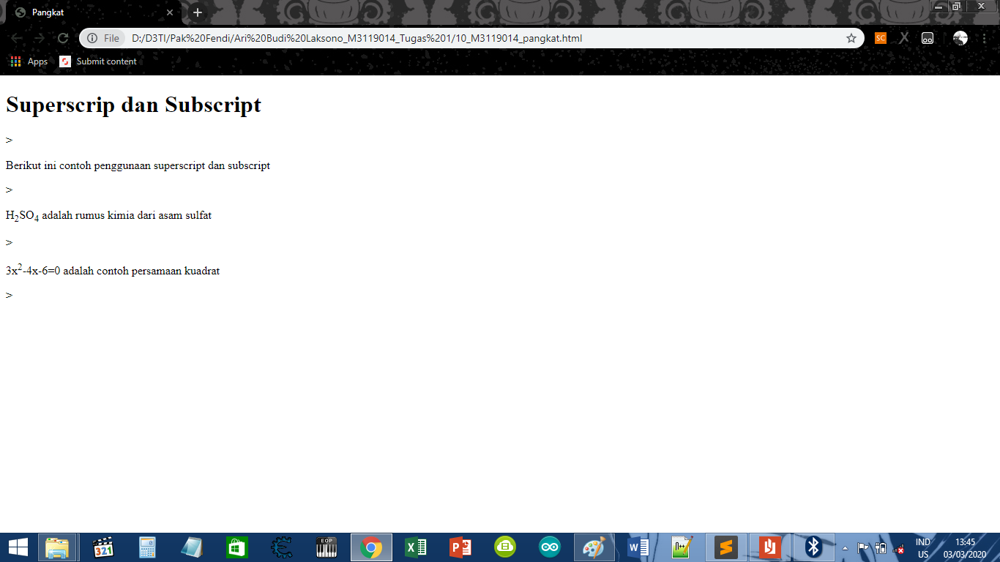

Membuat Superscript dan Subscript
KODE PROGRAM
<!DOCTYPE html>
<html>
<head>
<meta charset-"UTF-8">
<title>Pangkat</title>
</head>
<body>
<h1>Superscrip dan Subscript</h1>>
<p>Berikut ini contoh penggunaan superscript dan subscript</p>>
<p>H<sub>2</sub>SO<sub>4</sub> adalah rumus kimia dari asam sulfat</p>>
<p>3x<sup>2</sup>-4x-6=0 adalah contoh persamaan kuadrat</p>>
</body>
</html>
HASIL PROGRAM
Superscrip dan Subscript
>
Berikut ini contoh penggunaan superscript dan subscript
>
H2SO4 adalah rumus kimia dari asam sulfat
>
3x2-4x-6=0 adalah contoh persamaan kuadrat
>
SCREENSHOT

KESIMPULAN
Dari koding di atas, Dapat disimpulkan bahwa cara memakai pangkat yaitu dengan memakai perintah sup(superscript).
dan sub(subscript) .
Kembali Ke Halaman Utama